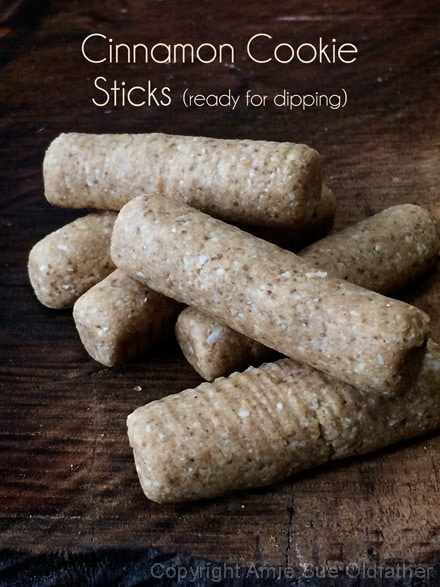
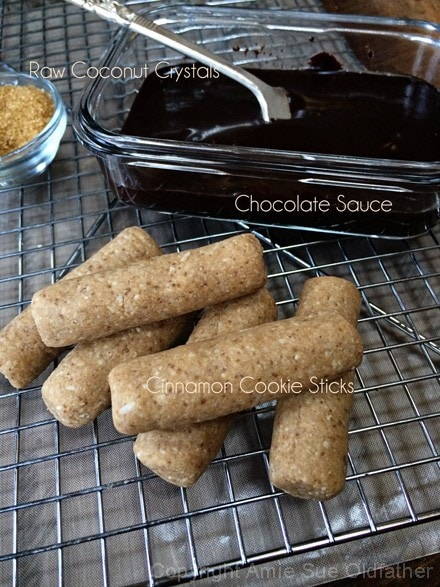
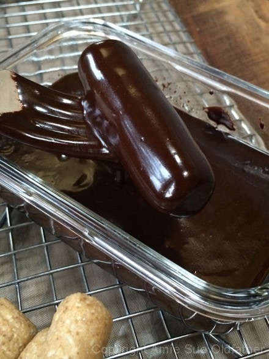
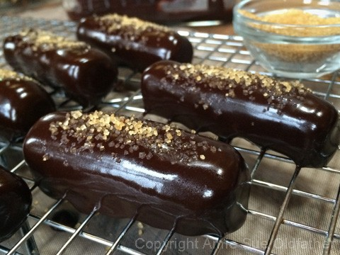

Chocolate Enrobed Cinnamon Cookie Sticks

~ raw, vegan, gluten-free ~
There are different types of cinnamon and the one that you use makes can markedly change the taste of a recipe. You will commonly find Cassia cinnamon in the local grocery stores.
It is less expensive and a bit spicier and more pungent. It is therefore preferred in exotic meat dishes, curries, and other savory foods. It also has a darker color than Ceylon cinnamon which is my favorite and the only one that I will use. It has a lighter, sweeter, and more delicate flavor. This cinnamon has a more delicate and complex flavor, with citrus, floral, and clove notes. Ceylon cinnamon is sometimes called true cinnamon. It is, of course, more expensive.
I never used to be a cinnamon snob, but I am now. A few years ago, I went through an apple phase. I was craving them and eating a couple a day. I would slice them up and heavily sprinkle on the cinnamon.
Somehow in my spice drawer, I had ended up with two different bottles of cinnamon. I never thought much about it but soon started noticing a big difference in taste. That is when I started my research. I encourage you to try the two side by side and see what you think.
You usually won’t find Ceylon cinnamon in the standard grocery store, unless they have a gourmet foods section. If you pick up a bottle of cinnamon and it doesn’t read “Ceylon”…. it will be the Cassia version. After plenty of research and testing several brands, I have come to enjoy the Organic Frontier Cinnamon brand. I buy it by the pound because… yes, I do use a lot of cinnamon in my life. :)
The chocolate coating that I used in the recipe worked beautifully but do take note that it will soften if kept at room temperature for too long. I store mine in the fridge until ready for eating.
Yields 22 cookies
Cookies:
Chocolate drizzle:
- 1/4 cup cold-pressed coconut oil, melted
- 1/4 cup raw cacao powder
- 1/4 cup maple syrup
Sprinklers:
Preparation:
Cookies:
- In a large mixing bowl combine; almond flour, cashew flour, powdered coconut, coconut crystals, cinnamon, and salt. I actually ran mine through a sifter to make sure everything was well mixed and fine.
- In a small bowl stir together the agave, coconut oil, and vanilla extract. Pour into the dry ingredients and mix the batter together with your hands.
- Scoop out the batter in measure 1 Tbsp measurements or as desired. Roll into small chubby logs, flattening the ends.
- Place the cookies on the mesh sheet that comes with the dehydrator and dry at 145 degrees for 1 hour, then reduce to 115 degrees (F) for about 16 hours. The exterior will be a bit firm but the cookies will be moist and chewy on the inside. Check them periodically throughout the dry time to find that “sweet spot” of doneness.
Chocolate drizzle:
- Place the coconut oil, cacao, and maple syrup in the blender and blend until it turns smooth and creamy.
- Pour into a shallow bowl. If the mixture is real soupy in texture, place in the fridge for 5-10 minutes. Needs to be thick enough to hold onto the cookie stick
- Tip: To melt the coconut oil, place the jar in a large bowl of hot water. You can hand mix this, but I find that it doesn’t get as creamy and risk having grainy cacao bits in it.
- Dip the dehydrated cookie into the chocolate, coating the whole thing. Lift out with a fork, tap the fork handle on the edge of the bowl a few times to knock off excess chocolate. Then slide the bottom of the fork along the edge and you go to transfer it to a rack to cool.
- Sprinkle with raw coconut crystals and place in the fridge or a cool room to set up.
The Institute of Culinary Ingredients™
- Raw Coconut Crystals add a “brown sugar” flavor to a recipe. Read about it (here).
- Why do I specify Ceylon cinnamon? Click (here) to learn why.
- What is Himalayan pink salt and does it really matter? Click (here) to read more about it.
Culinary Explanations:
- Why do I start the dehydrator at 145 degrees (F)? Click (here) to learn the reason behind this.
- When working with fresh ingredients it is important to taste test as you build a recipe. Learn why (here).
- Don’t own a dehydrator? Learn how to use your oven (here). I do however truly believe that it is a worthwhile investment. Click (here) to learn what I use.




© AmieSue.com